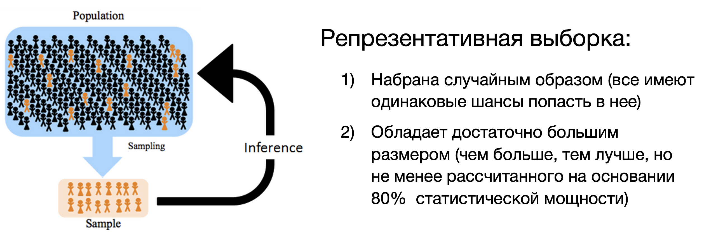
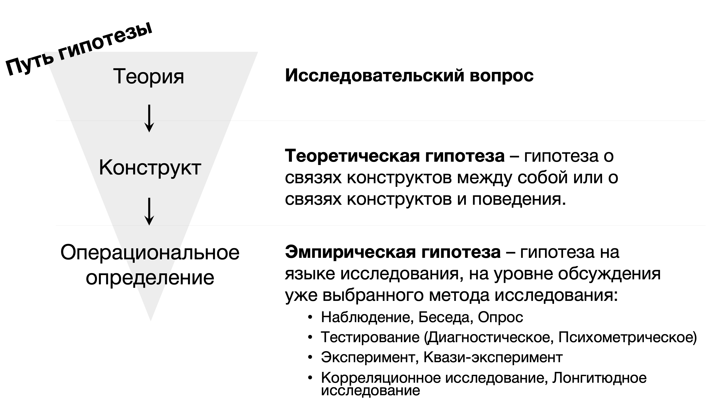
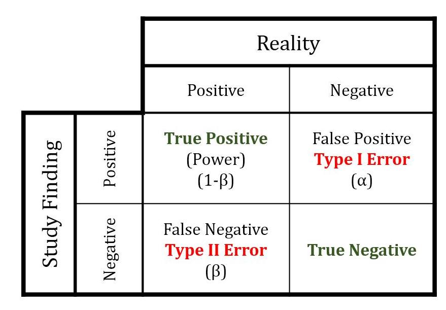
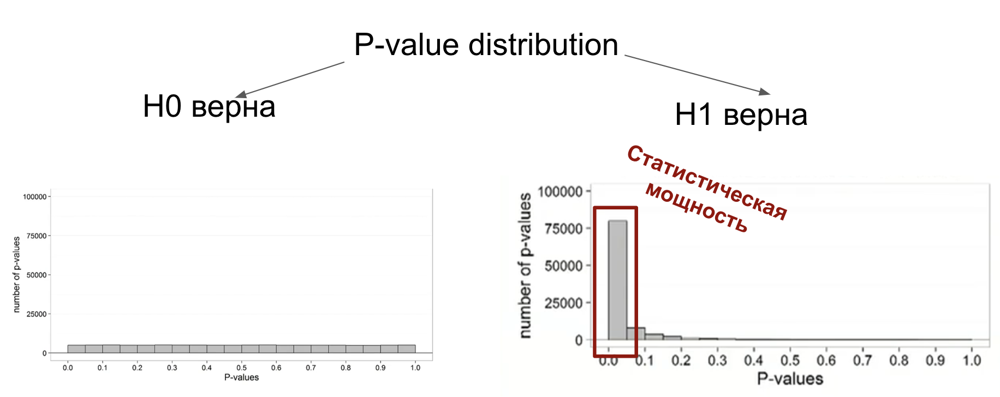
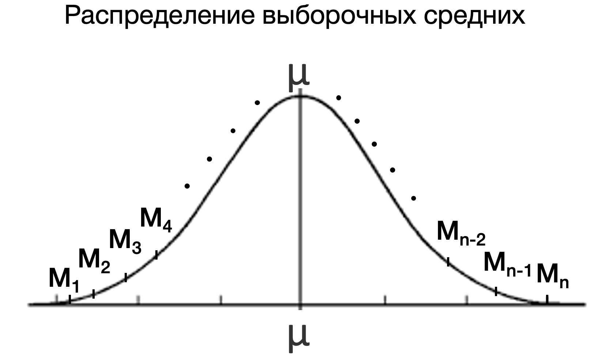

8 Статистический вывод
Мы закончили со введением в статистику, обсудили случайные величины и вероятность и научились считать описательные статистики: меры центральной тенденции, куда “тяготеет” центр масс наших данных (среднее, медиана, мода), и меры вариативности, показывающие, как сильно изменяются наши данные от наблюдения к наблюдению (дисперсия, стандартное отклонение, межквартильный размах). Описательные статистики были нужны нам, чтобы описать наши данные, заменить большую непонятную табличку сырых данных на конкретные значения и сделать какие-то или предположения о том, есть ли между ними различия, если мы говорим о выборке из генеральной совокупности, либо какие-то выводы, если наши данные представляют всю генеральную совокупность.
Помимо описания данных, мы говорили о выборочных оценках – рассчитанных на нашей выборке параметров в попытке оценить эти параметры у генеральной совокупности. Параметры нас, как правило, интересуют те, которые задают распределение признака в популяции. Вспоминаем, что в психологичесуких исследованиях наши признаки чаще всего являются случайными величинами, а значит, по центральной предельной теореме, распределены нормально.
Оценки, которые мы получали:
- Точечные оценки: выборочное среднее (M, \(\overline X\) ) и выборочное стандартное отклонение (s, sd)
- Интервальные оценки: доверительный интервал, в котором с заданной вероятностью находится популяционное среднее: M ± CI. Чаще всего рассматривается 95% или 99% доверительные интервалы.
Вспомним, что популяционные и выборочные оценки пишутся специально по-разному, чтобы не запутаться, о выборке или генеральной совокупности идет речь:
| Генеральная совокупность | Выборка | |
|---|---|---|
| Среднее (математическое ожидание) | \(\mu\) | M, \(\overline X\) |
| Стандартное отклонение | \(\sigma\) | s, sd |

Вспомним расчет доверительного интервала:
Исследование семейных пар в России (объем выборки составил 100 семейных пар), в которых есть дети подросткового возраста, показало, что те пары, где отец и мать работают полный рабочий день, они проводят со своими детьми в среднем 15 часов свободного времени в неделю. Согласно данным проведенного исследования, стандартное отклонение оказалось равным 4,5 (ч). Можно ли на уровне доверия 0,99 утверждать, что в семьях, в которых работают и отец, и мать, в среднем в течение недели родители проводят с детьми подросткового возраста больше 14 часов?
Решение
Сначала определеяем, о чем нас спрашивают в этой задаче: нам нужно посотроить доверительный интервал для выборочного среднего = 15 и сравнить его с числом 14: находится оно левее этого интервала, и тогда можно сказать, что родители проводят с детьми в среднем больше 14 часов, или 14 входит в этот интервал, и тогда это утверждение будет неверно
Вычисляем доверительный интервал CI (confidence interval): равен \(Z_{99\%} \times se\): Z-значение, при котором охватывается 99% даннных, равно примерно 3. \(se = \frac{\sigma}{\sqrt{n}} = \frac{sd}{\sqrt{n}} = \frac{4.5}{\sqrt{100}} = 0.45\) Доверительный интервал равен \(Z_{99\%} \times se = 3 \times 0.45 = 1.35\):
Таким образом, можем записать доверительный интервал: \([M-CI; M+CI] = [15-1.35; 15+1.35] = [13.65;16.35]\). Сравним его с числом 14: видимо, что 14 входит в этот интервал, то есть, утверждение, что родители проводят с детьми в среднем больше 14 часов на уровне доверия 0.99 неверно.
8.1 Идея статистического вывода
Как сделать правильный вывод и не облажаться?
- Сформулировать осмысленную проверяемую ипотезу
- Подобрать репрезентативную выборку
- Собрать на ней качественные (хорошие) данные
- Обработать данные в соответствии с алгоритмом качественной обработки
Garbage in, garbage out (GIGO).

Мы находим в рамках фреквентистской (частотной) статистики – то есть говорим о частотах и вероятностях. На выборочных оценках одного проведенного исследования мы мало что могли бы сказать: допустим, мы поисследовали 100 семейных пар и посчитали, что среднее время, которое родители проводят с детьми в России, равно 15 часов, но как понять, равно ли среднее в генеральной совокупности так же 15, а не, например, тем же 14?
Идея статистического тестирования гипотез (null hypothesis statistical testing) базируется на том, что мы выдвигаем какое-то предположение относительно генеральной совокупности и ее параметров: среднего (математического ожидания), стандартного отклонения или каких-то других параметров, и статистически проверяем это предположение. Если мы будем выбирать много выборок и считать их средние, какова веротность получить такие или более отличающиеся от популяционных выборочные оценки чисто случайным образом, если на самом деле это не так?
Вернемся к нашему примеру про время проведенное с детьми, вспомним датасет о португальских студентах
| student | school | sex | age | address | famsize | Pstatus | Medu | Fedu | Mjob | Fjob | reason | guardian | traveltime | studytime | failures | schoolsup | famsup | paid_mat | activities | nursery | higher | internet | romantic | famrel | freetime | goout | Dalc | Walc | health | absences_mat | G1_mat | G2_mat | G3_mat | paid_por | absences_por | G1_por | G2_por | G3_por | G_mat | G_por | ansences_mat_groups | ansences_por_groups |
|---|---|---|---|---|---|---|---|---|---|---|---|---|---|---|---|---|---|---|---|---|---|---|---|---|---|---|---|---|---|---|---|---|---|---|---|---|---|---|---|---|---|---|
| id1 | GP | F | 18 | U | GT3 | A | 4 | 4 | at_home | teacher | course | mother | 2 | 2 | 0 | yes | no | no | no | yes | yes | no | no | 4 | 3 | 4 | 1 | 1 | 3 | 6 | 5 | 6 | 6 | no | 4 | 0 | 11 | 11 | 5.666667 | 7.333333 | middle | less |
| id2 | GP | F | 17 | U | GT3 | T | 1 | 1 | at_home | other | course | father | 1 | 2 | 0 | no | yes | no | no | no | yes | yes | no | 5 | 3 | 3 | 1 | 1 | 3 | 4 | 5 | 5 | 6 | no | 2 | 9 | 11 | 11 | 5.333333 | 10.333333 | less | less |
| id4 | GP | F | 15 | U | GT3 | T | 4 | 2 | health | services | home | mother | 1 | 3 | 0 | no | yes | yes | yes | yes | yes | yes | yes | 3 | 2 | 2 | 1 | 1 | 5 | 2 | 15 | 14 | 15 | no | 0 | 14 | 14 | 14 | 14.666667 | 14.000000 | less | less |
| id5 | GP | F | 16 | U | GT3 | T | 3 | 3 | other | other | home | father | 1 | 2 | 0 | no | yes | yes | no | yes | yes | no | no | 4 | 3 | 2 | 1 | 2 | 5 | 4 | 6 | 10 | 10 | no | 0 | 11 | 13 | 13 | 8.666667 | 12.333333 | less | less |
| id6 | GP | M | 16 | U | LE3 | T | 4 | 3 | services | other | reputation | mother | 1 | 2 | 0 | no | yes | yes | yes | yes | yes | yes | no | 5 | 4 | 2 | 1 | 2 | 5 | 10 | 15 | 15 | 15 | no | 6 | 12 | 12 | 13 | 15.000000 | 12.333333 | middle | middle |
| id7 | GP | M | 16 | U | LE3 | T | 2 | 2 | other | other | home | mother | 1 | 2 | 0 | no | no | no | no | yes | yes | yes | no | 4 | 4 | 4 | 1 | 1 | 3 | 0 | 12 | 12 | 11 | no | 0 | 13 | 12 | 13 | 11.666667 | 12.666667 | less | less |
| id8 | GP | F | 17 | U | GT3 | A | 4 | 4 | other | teacher | home | mother | 2 | 2 | 0 | yes | yes | no | no | yes | yes | no | no | 4 | 1 | 4 | 1 | 1 | 1 | 6 | 6 | 5 | 6 | no | 2 | 10 | 13 | 13 | 5.666667 | 12.000000 | middle | less |
| id9 | GP | M | 15 | U | LE3 | A | 3 | 2 | services | other | home | mother | 1 | 2 | 0 | no | yes | yes | no | yes | yes | yes | no | 4 | 2 | 2 | 1 | 1 | 1 | 0 | 16 | 18 | 19 | no | 0 | 15 | 16 | 17 | 17.666667 | 16.000000 | less | less |
| id10 | GP | M | 15 | U | GT3 | T | 3 | 4 | other | other | home | mother | 1 | 2 | 0 | no | yes | yes | yes | yes | yes | yes | no | 5 | 5 | 1 | 1 | 1 | 5 | 0 | 14 | 15 | 15 | no | 0 | 12 | 12 | 13 | 14.666667 | 12.333333 | less | less |
| id11 | GP | F | 15 | U | GT3 | T | 4 | 4 | teacher | health | reputation | mother | 1 | 2 | 0 | no | yes | yes | no | yes | yes | yes | no | 3 | 3 | 3 | 1 | 2 | 2 | 0 | 10 | 8 | 9 | no | 2 | 14 | 14 | 14 | 9.000000 | 14.000000 | less | less |
Зададим три вопроса:
Допустим, мы исследовали семьи с подростками в крупных (GP school) и небольших городах (MS school) и на нашей выборке посчитали, что в крупных городах родители проводят со своими детьми в среднем 14 часов, а в небольших городах – 15 часов в неделю (из данных задания на доверительный интвервал). 1. Отличается ли статически значимо время, которое проводят родители с детьми в России в крупных и небольших городах? 2. Отличается ли статистически значимо частота употребления алкоголя в семьях с менее поддерживающими отношениями и более поддерживающими? 3. Отличается ли статистически значимо средний балл по математике у тех, кто чаще или реже пропускает занятия?
Мы увидели вопрос о статистической значимости. Статистическая значимость – вероятностный уровень, через который должны перешагнуть наши найденные значения на выборке для того, чтобы мы могли сделать вывод о генеральной совокупности. Почему нельзя просто сказать, что 14 и 15 – очевидно разные числа, значит, и значения различаются? Потому что мы измерили эти значения только на одной выборке, а выводы, которые мы делаем, базируются на вероятностях получить такие или иные значения или частотах их возникновения (фреквентистская статистика!). И мы знаем, что если мы будем повторять исследование много-много раз, то средние в них не будут одинаковы, согласно центральной предельной теореме, они будут распределны нормально, где средним будет – среднее генеральной совокупности (математической ожидание).
Для того, чтобы ответить на вопрос, есть ли статистически значимые различия, нужно проверить гипотезу о различиях по алгоритму NHST (null hypothesis statistical testing)
8.2 NHST: алгоритм проверки гипотезы и анализа данных
- Формулируем эмпирическую гипотезу (гипотеза на языке возможностей того исследования, которое будет проводиться), выделяем зависимую и независимую переменные и характер исследуемой связи между ними. Понимаем, как будут выглядеть собранные данные.
- Формулируем нулевую \(H_0\) (об отсутствии и различий или связи) и альтернативную \(H_1\) (о наличии различий или связи) гипотезы
- Выбираем условия, при котором будем рассчитывать статистический критерий – уровень значимости \(\alpha\) (вероятность ложноположительного вывода, чаще всего α=0.05) и статистическую мощность \(power = 1-\beta\) (вероятность обнаружить эффект, если он есть, чаще всего power=0.8).
- Выбираем статистический критерий проверки гипотезы (например, t-test, Манна-Уитни тест, ANOVA, тест Краскела-Уоллиса, корреляционный тест, линейная регрессия и т.д.).
- На основании α, power и размера эффекта предыдущих исследований для выбранного статистического критерия рассчитываем размер необходимой выборки.
– собираем данные –
- Выбираем среду анализа данных, предобработываем данные.
- Для выбранных переменных по отдельности считаем описательные статистики, переменные визуализируем с помощью гистограммы (histogram) или столбчатой диаграммы (barplot) или графика плотности вероятности (density plot).
- Проводим расчет статистического критерия: рассчитываем ключевую статистику (t-значение, F-значение, R т.д) и p-value, считаем размер эффекта (Cohen’s d, eta squared и тд).
- Делаем выводы и интерпретируем статистики, полученные в ходе статистического теста: сравниваем полученное p-value с выбранным уровнем \(\alpha\), если p-value < \(\alpha\) – считаем, что у нас достаточно доказательств, чтобы отвергнуть нулевую гипотезу \(H_0\), и принимаем решение о верности альтернативной гипотезы \(H_1\).
- Делаем вывод относительно эмпирической гипотезы.
- Визуализируем данные иллюстрирующим результаты графиком (диаграмма рассеяния с линией тренда, боксплот, вайолин плот и другие).
Разберем каждый шаг.
8.3 Эмпирические гипотезы и переменные
Эмпирические гипотезы – те, которые мы можем проверить опытным путем. Чтобы правильно их сформулировать, нам надо также определиться с типом эмпирического исследования, которое возможно для проверки наших теоретических гипотез. В психологических исследованиях это чаще всего эксперимент, квази-эксперимент, корреляционное исследование (и лонгитюдное исследование как его подвид). Иногдd бывает case study, исследование одного конкретного случая, чаще в когнитивной психологии и нейронауках.
Эмпирические гипотезы сформулированы в проверяемом для нашего исследования виде, то есть переведенные на язык исследования, исходя из наших предполагаемых переменных и их значений.

Разберем несколько примеров. Какие методы можно применить для исследования этих вопросов?
Ситуация 1
Предположим, что группа ученых хочет исследовать влияние курения на возникновение ментальных расстройств Какие исследования можно провести для исследования этого вопроса?
Ситуация 2
Предположим, что перед выборам в государственную думу группа социологов проводит опрос общественного мнения с целью выявления предпочтений к кандидатам. Для этого операторы колл-центра обзванивали телефонные номера, выбранные случайным образом из справочника телефонов Москвы, по принципу “каждый десятый номер”. Обзвон продолжался в течение недели в рабочее время операторов колл-центра с 10 до 18. Какие методы используются в таком исследовании? Что можно про них сказать, есть ли у них недостатки?
Методы
И вернемся к нашей ситуации с данными на португальских студентах.
Допустим, мы исследовали семьи с подростками в крупных (GP school) и небольших городах (MS school) и на нашей выборке посчитали, что в крупных городах родители проводят со своими детьми в среднем 14 часов, а в небольших городах – 15 часов в неделю (из данных задания на доверительный интвервал). 1. Отличается ли статически значимо время, которое проводят родители с детьми в России в крупных и небольших городах? 2. Отличается ли статистически значимо частота употребления алкоголя в семьях с менее поддерживающими отношениями и более поддерживающими? 3. Отличается ли статистически значимо средний балл по математике у тех, кто чаще или реже пропускает занятия?
Метод, который здесь используется – это корреляционное исследование. Если бы в этом исследовании с разными школами проводились еще какие-либо манипуляции – это был бы квази-эксперимент (так как мы не можем взять одинаковые семьи и одним сказать “проводите по 15 часов с детьми”, а другим – “проводите по 14 часов с детьми”, у нас уже есть эти группы, мы не проводим манипуляции сами).
Эмпирическая гипотеза 1 может звучать так: семьи, живущие в крупных городах, проводят в среднем меньше времени с детьми, чем семьи, живующие в маленьких городах
Эмпирическая гипотеза 2: Студенты, кто оценивает отношения с родителями как менее поддерживающие (переменная famrel, менее поддерживающие в значениях 1-2), чаще употребляют алкоголь (переменная Walc, употребление в выходные дни, значения 4-5)
Эмпирическая гипотеза 3 Студенты, у кого было много пропусков (absences_mat или absences_por, высокие значения), будут иметь более низкий средний балл (среднее из G1_mat, G2_mat, G3_mat или G1_por, G2_por, G3_por -- низкие значения)
Давайте сначала подумаем, что это за гипотезы, какие зависимые и независимые переменные, наличие или отсутствие какой связи между зависимой и независимыми переменными нам хочется проверить?
8.3.1 Зависимые и независимые переменные
Независимые переменные – это все, чем мы манипулируем по ходу проведения исследования, какие различия создаем с целью получить разный результат. Зависимая – целевая переменная, различия в которой как раз хотим получить путем манипуляции независимыми переменными, то, что мы измереяем. При описании исследования всегда важно записывать ЗП и НП, наряду с эмпирической (если метод это эксперимент, то экспериментальной) гипотезой. Эмпирическая гипотеза и переменные – сердце нашего исследования, самое основное из языка, на котором описывается исследование, без понимания, что мы хгтим прооверить, чула не получится.
При описании ЗП и НП важно указать, к какой шкале они относятся? Это важно понимать, чтобы потом выбрать, как анализировать данные.
8.3.2 Уровни НП в категориальных переменных
Об уровнях в независимой переменной (НП) говорят в категориальных – порядковых или номинативных – переменных. Это перечень возможных значений, которые может принимать категориальная НП. Например, условия “часто” и “редко”, условия “обеспеченная семья” или “не обеспеченная”. В примерах выше для гипотезы семьи, живущие в крупных городах, проводят в среднем меньше времени с детьми, чем семьи, живующие в маленьких городах мы собираемся сравнить две группы, и здесь можно говорить об уровнях НП город – крупный город и небольшой город.
Для гипотезы 1
Мы преполагаем, что среднее время, проведенное родителями с детьми в неделю, коррелирует с школой, то есть среднее время будет различаться в разных школах:
$ Time School$
- ЗП – среднее время, проведенное родителями с детьми в неделю, количественная непрерывная – шкала отношений
- НП – школа в городе (крупном / небольшом) – категориальная номинативная
Для гипотезы 2
$Walc famrel $
- ЗП – Walc, количество алгоголя, выпиваемое студентами на выходных, выраженное опросником со шкалой от 1 до 5. ЗП – порядковая шкала.
- НП – famrel, оценка, насколько поддерживающие отношения в семье, выраженнае опросником со шкалой от 1 до 5. НП – порядковая шкала.
Для гипотезы 3
$ ?? ?? $
- ЗП – ?
- НП – ?
В зависимости от того, какие выводы мы хотим сделать, нам можем потребоваться разное количество уровней в данных. Сравните гипотезы: Студенты, кто оценивает отношения с родителями как менее поддерживающие (переменная famrel, менее поддерживающие в значениях 1-2), чаще употребляют алкоголь (переменная Walc, употребление в выходные дни, значения 4-5) и Чем ниже студенты оценивают отношения с родителями (переменная famrel), тем чаще они употребляют алкоголь в выходные дни (переменная Walc). Чем они отличаются?
Отличия
От того, какой вывод мы хотим сделать, хотим ли обнаружить характер связи между уровнями категориальной переменной (чаще всего линейной, но может быть и какой-то еще, экспоненциальной например) или нам достаточноо сравнить двве группы между собой, будет зависеть, какой статистический метод будем выбирать. Вернемся к этому чуть позже.
8.3.3 Связь между ЗП и НП
Выводы о какой связи мы можем установить?
Два основных вида связи между переменными:
- Ассоциативная или корреляционная
- Причинно-следственная
Три необходимых условия для установления причинно-следственной связи:
- Изменение НП произошло раньше, чем мы пронаблюдали изменение в ЗП
- Изменения НП имеют ассоциативную связь с изменениямм в ЗП
- Нет никаких альтернативных объяснений изменений в ЗП, помимо изменений НП
Сейчас у нас есть только опросные данные, в которых студенты отвечали на вопросы одновременно. Получается, что в таком дизайне исследования мы не проходим необходимые условия для установления причинно-следственной связи, следовательно, сделать вывод о причинно-следственной связи не можем. Причинно-следственную связь мы можем установить только в ходе эксперимента или квази-эксперимента (отличается от эксперимента тем, что испытуемые не распределяются в группы рандомно, а используются уже существующие в популяции группы, например, разные страны). Во всех остальных видах исследований, особенно, когда исследуется связь переменных в одном самоотчете или опроснике, мы можем говорить только об ассоциативной или корреляционной связи.
Часто бывает, что Вполне вероятно, что плохие отношения в семье приводят у алкоголизму у детей. Но у нас в нашей выборке есть только такие данные – из опросника, и из тех данных того исследования, которые у нас есть, мы можем судить только о наличии или отсутствии корреляции.
При формулировании выводов эти выводы могут отличаться так, сравните: - Вывод 1: “Менее поддерживающие отношения в семье вызывают алкоголизм”. - Вывод 2: “Менее поддерживающие отношения в семье ассоциированы с высоким риском алкоголизма”.
Несмотря на то, что мы говорим о корреляции, тут тоже есть варианты. Сравните варианты формулировок для гипотезы 1: чем меньше возраст студентов (age), чем ниже будут ответы в переменной Walc и студенты возраста 15, 16, 17 лет будут выбирать меньшие варианты ответа в переменной Walc или студенты возраста 15 лет будут выбирать меньшие варианты ответа в переменной Walc. Чем они отличаются?
Отличия
Для того, чтобы проверить, есть ли статистически значимые различия между этими группами, нужно сформулировать нулевую и альтенативную гипотезы.
8.4 Нулевая и альтернативные статистические гипотезы
Для того, чтобы провести статистический тест, нужно определить еще статистические гипотезы – искусственно введенные тестируемые утверждения относительно генеральной совокупности.Они вводят как раз для того, чтобы иметь возможность как-то посчитать данные и статистически сделать вывод на их основании о генеральной совокупности по нашей маленькой выборке. Статистических гипотез две, они взаимо противоположны: нулевая (основная) и альтернативная гипотезы.
Нулевая (основная) гипотеза \(H_0\) – это всегда гипотеза об отсутствии различий в генеральной совокупности. Гипотеза об отсутствии различий между группами (если гипотеза подразумевает сравнение групп) или об отсутствии связи между переменнами (если гипотеза про связь количественных непрерывных переменных). Ее мы пытаемся опровергнуть в статистическом тестировании (да, именно опровергнуть, а не подтвердить – выводы, которые мы можем сделать отноосительно нулевой гипотезы – только отвергнуть или не отвергнуть, не можем подтвердить ее и принять).
Альтернативная гипотеза \(H_1\) – гипотеза, противоположная к \(H_0\), то есть гипотеза о наличии различий в генеральной совокупности. \(P(H_0) + P(H_1) = 1\)
Какие \(H_0\) и \(H_1\) для наших гипотез?
Для гипотезы 1
$ Time School$
Для гипотезы 2
$Walc famrel $
- ЗП – Walc, количество алгоголя, выпиваемое студентами на выходных, выраженное опросником со шкалой от 1 до 5. ЗП – порядковая шкала.
- НП – famrel, оценка, насколько поддерживающие отношения в семье, выраженнае опросником со шкалой от 1 до 5. НП – порядковая шкала.
Для гипотезы 3
$ ?? ?? $
- ЗП – ?
- НП – ?
8.5 Уровень значимости и статистическая мощность
После того, как мы разобрались с гипотезами, эмпирической и статистическими, нам нужно задать критерии, на основании которых будем принимать решение о выводах из нашей выборке на генеральную совокупность.
Уровень значимости \(\alpha\) и статистическая мощность \(power = 1-\beta\) – это два из самых важных параметров в тестировании гипотез. Эти понятия задают вероятностные рамки, в которых мы будем проводить тест. Первая рамка – это вероятность получить значимый результат (значимые различия между группами или связь между переменными), если его на самом нет в генеральной совокупности – ложноположительный результат, false positive, она же ошибка первого рода \(\alpha\).

Вторая рамка – вероятность получить незначимый результат, если его на самом деле он есть в генеральной совокупности – ложноотрицательный результат, false negative, она же ошибка второго рода \(\beta\).

Уровень значимости \(\alpha\), она же ошибка первого рода – сделать ложноположительный вывод, то есть когда эффекта нет в генеральной совокупности, но мы делаем вывод, что он есть – мы задаем сами (!). В психологии есть конвенциональная договоренность считать уровень значимости \(\alpha = 0.05\). То есть, мы просто договорились считать 5% вероятность сделать ложноположительный вывод – компромиссным вариантом между тем, чтобы мочь делать вообще какие-то выводы о генеральной совокупности, и тем, что 5% наших исследований будут содержать неверные выводы (на самом деле, гораздо больше, об этом поговорим позже).
Но это договоренность, притом спорная! В физике элементарных частиц \(\alpha = 0.000003\)!
Статья “Justify your alpha” в Nature Human Behaviour https://www.nature.com/articles/s41562-018-0311-x
Вероятность, при которой в генеральной совокупности на самом деле есть разница между группами или связь, но мы не смогли зарегистрировать ее на наших данных \(\beta\), она же ошибка второго рода – это ошибка второго рода, вероятность сделать ложноотрицательный вывод. И если ошибка первого рода \(\alpha\) эксплицитно фигурирует в тестировании гипотезы – это то значение, с которым мы сравниваем наше получившееся p-value, то \(\beta\) не участвует в этом тестировании. То есть, мы можем легко получить ложнооотрицательный вывод, отсутствие результатов, хотя на самом деле они есть. Поэтому нам Нужно ввести \(\beta\) в прооверку гипотезы и минимизировать такую вероятность. Для этого введено понятие статистической мощности теста \(power = 1 - \beta\).
Уровень статистической мощности (statistical power) – это положительная метрика, уровень вероятности, при которой мы гарантируем, что если различия между группами или связь между переменными есть в генеральной совокупности, то мы сможем найти ее на наших данных при помощи нашего статистического теста. Если смотреть на таблицу ошибок первого и второго рода, статистическая мощность – обратная величина к вероятности ошибки второго рода, не найти значимый эффект, если он есть. В психологии конвенционально сложилось, что чаще всего статистическую мощность принимают на уровне \(power = 1 - \beta\). Снова договоренность!
8.6 Выбор статистического критерия
Как понять, какой тест выбрать? Это, наверное, один из самых сложных вопросов в статистике. На него влияет большое количество нюансов, мы рассмотрим их в следующем разделе
8.7 Размер выборки
Расчет размера выборки – важнейший этап, потому что именно он отвечает за нивелирование ошибки второго рода, сделать ложноотрицательный вывод. Вполне может оказаться так, что из-за маленькой выборки мы просто не смогли зафиксировать различия, которые на самом деле есть в генеральной совокупности!
Этот пункт раньше часто пропускался: казалось, что размер выборки не требует определенного расчета, и достаточно опираться на предыдущие исследование. Оказалось, что это не так, подробнее о последствиях такого подхода поговорим далее.
Чтобы посчитать необходимую выборку, нужно знать примерный размер эффекта, который мы можем обнаружить, уровень значимости \(\alpha\), и статистическую мощность.
Размер эффекта – это величина наблюдаемых различий. За степень различий отвечает не полученная статистика после примененного статистического критерия (например, t-значение, F-значение), и не p-значение, а отдельная метрика. Эта метрика расчитывается по формулам индивидуально для каждого статистического теста. Например, для t-test размер эффекта – это \(Cohen's \ d\) или его нормализованная версия \(Hedges`\ g\) (на практике используется реже). Исключение составляет только коэффициент корреляции \(r\) – он как раз будет являться и статистикой, и величиной эффекта. Для линейной регрессии с одинм предиктором (фактором, он же независимая переменная) размером эффекта может также являться \(R^2\), а для множественной, когда много предикторов (факторов или НП), лучше уже использовать метрику \(Cohen’s \ f^2\) или \(partial \ \eta^2 2\) В психологических исследованиях, если они не затрагивают психофизиологию, размер эффекта редко бывает большим – обычно он полоучается в районе маленького или среднего. И чем меньше ожидаемый размер эффекта, тем больше наблюдений нам надо собрать для возможности сделать точный вывод о наличи или отсутствии различий в генеральной совокупности!
Есть хорошая визуализация размера эффекта дла t-test Cohen’s d https://rpsychologist.com/d3/cohend/
Размер эффекта обычно участвует в тестировании гипотез на двух стадиях этого алгоритма:
- Для расчета размера выборки на этапе планировании исследования – в этом случае используется размер эффекта из аналогичных уже проведенных исследований для того, чтобы примерно оценить возможности поймать популяционный эффект на нашей выборке и набрать нужное количество (шаг 5 этого алгоритма).
- Во время интерпретации проведенного статистического теста на данных. Размер эффекта – одна из ключевых цифр для понимания результатов статистических тестов (шаг 10 этого алгоритма).
Если в статьях, на которые вы опираетесь при планировании исследования, не указан размер эффекта, его можно посчитать самостоятельно на основании указанных в статьях данных: размера выборки в исследовании, принятого уровня статстической мощности (если не указан, то берется обычно за 0.8) и выбранного уровня статистической значимости \(\alpha\)(если не указан, то берется обычно за 0.5).
Табличка с метриками размеров эффектаинтерпретацией по их величинам на сайте Cambridge University и https://imaging.mrc-cbu.cam.ac.uk/statswiki/FAQ/effectSize
| Стат критерий | Метрика размера эффекта | Маленький эффект | Средний эффект | Сильный эффект |
|---|---|---|---|---|
| t-test | \(Cohen's \ d, Hedges' \ g\) | 0.2 | 0.5 | 0.8 |
| ANOVA | \(\eta^2, \omega^2\) | 0.01 | 0.06 | 0.14 |
| ANOVA | \(Cohen' \ f\) | 0.1 | 0.25 | 0.4 |
| линейная регрессия (один фактор) | \(Cohen' \ f\) | 0.1 | 0.25 | 0.4 |
| линейная регрессия (много факторов) | \(partial \ \eta^2\) | 0.02 | 0.13 | 0.26 |
| линейная регрессия (много факторов) | \(Cohen' \ f\) | 0.14 | 0.39 | 0.59 |
“Calculating and reporting effect sizes to facilitate cumulative science: a practical primer for t-tests and ANOVAs” https://www.frontiersin.org/articles/10.3389/fpsyg.2013.00863/full
Размер эффекта, уровень значимости \(\alpha\), статистическая мощность и размер выборки – связанные параметры. Зная 3 их них, всегда можно вычислить четвертый! https://rpsychologist.com/d3/nhst/
Сделать это можно в G*Power https://www.psychologie.hhu.de/arbeitsgruppen/allgemeine-psychologie-und-arbeitspsychologie/gpower или в R, например, с помощью пакета pwr https://cran.r-project.org/web/packages/pwr/pwr.pdf.
Допустим, мы решили проверять гипотезу о том, что студенты, чьи родители получили магистерское образование, учатся лучше, чем те, чьи родители закончили колледж. Выбрали уровень статистической значимости \(\alpha = 0.05\), с которым будем сравнивать p-values, которые получим. Выбрали уровень статистической мощности \(power = 0.8\) (то есть ошибка второго рода \(\beta = 0.2\)). Выбрали, что будем проверять эти гипотезу с помощью t-test. Из предыдущего похожего исследования узнали, что размер эффекта в аналогичном исследовании был равен Cohen’s d = 0.37. И теперь можем оценить, сколько данных нам нужно набрать, чтобы если различие между такими студентами было в генеральной совокупности, мы смогли обнаружить его на наших данных. Эти 4 величины связаны между собой математически, поэтому зная 3 любых, мы можем вычислить четвертую.

Underpowered studies – огромнная проблема многих наук. “Power failure: why small sample size undermines the reliability of neuroscience” https://www.nature.com/articles/nrn3475
library(pwr)
pwr::pwr.t.test(d=0.37,power=0.8,sig.level=0.05,type="two.sample", alternative="greater")##
## Two-sample t test power calculation
##
## n = 91.00624
## d = 0.37
## sig.level = 0.05
## power = 0.8
## alternative = greater
##
## NOTE: n is number in *each* groupАнлогично, расчет размера выборки для проверки гипотезы о том, что образование родителей и прохождение подготовительного курса как-то связано с успеваемостью студентов с помощью построения линейной модели.
## Power for multiple regression
##
## n p1 p2 f2 alpha power
## 43.28562 2 0 0.24 0.05 0.8
##
## URL: http://psychstat.org/regressionУ пакета есть веб-приложение https://webpower.psychstat.org/models/reg01/
Важный момент про статистическую мощность: именно она как раз показывает, с какой частотой будут выпадать \(p\)-values < \(\alpha\) в случае верности альтернативной гипотезы (что различия или связь есть!)

Для того, чтобы детально поразбираться в нюансах размера эффекта и выборки, можно пройти курс Лакенса https://www.coursera.org/learn/statistical-inferences (кажется, теперь только с vpn)
8.8 Расчет статического критерия и проверка значимости
Вернемся снова к нашим вопросам.
Допустим, мы исследовали семьи с подростками в крупных (GP school) и небольших городах (MS school) и на нашей выборке посчитали, что в крупных городах родители проводят со своими детьми в среднем 14 часов, а в небольших городах – 15 часов в неделю (из данных задания на доверительный интвервал). 1. Отличается ли статически значимо время, которое проводят родители с детьми в России в крупных и небольших городах? 2. Отличается ли статистически значимо частота употребления алкоголя в семьях с менее поддерживающими отношениями и более поддерживающими? 3. Отличается ли статистически значимо средний балл по математике у тех, кто чаще или реже пропускает занятия?
На примере первого вопроса разберем процесс проверки нулевой гипотезы, то, как работает любой статистический критерий.
\(\mu\) = 14, M = 15, n = 100, sd = 4.5
Сформулириуем нулевую и альтернативные гипотезы. Нулевая гипотеза – всегда гипотеза об отсутствии различий, то есть, что среднее время, которое проводят родители с детьми в неделю, не отличается в больших и маленьких городах. \(H_0\): \(\mu_{большие} = \mu_{маленькие}\) \(H_1\): \(\mu_{большие} \neq \mu_{маленькие}\)
Далее мы начинаем проверять наше нулевое предположение, будем пытаться опровергнуть нулевую гипотезу.
Итак, предполагаем, что нулевая гипотеза верна. Далее, если мы исходим из того, что она верна, то \(\mu_{большие}\) и \(\mu_{маленькие}\) будут в одной точке. Так как речь идет про два средних разных выборок, то нам нужно распределение выборочных средних, на котором мы и сможем разместить \(\mu_{большие}\) и \(\mu_{маленькие}\).

Далее, нам нужно как-то оценить, насколько \(\mu_{маленькие}\) удалено от \(\mu_{большие}\). Что мы делаем всегда, когда нам нужно сравнить, какое из значений, взятых из разных выборок, больше или меньше другого? Переходим к стандартному нормальному распределению – распределению Z-оценок! \(Z = \frac{X - \bar X}{sd}\)
Причем стандартным отклонением этого распределения будет стандартная ошибка среднего – величина стандартного отклонения для распределения выборочных средних.
Возьмем за середину распределения \(\mu_{большие}\) (произвольно, можем взять любое из средних). Чтобы перевести \(\mu_{маленькие}\) в Z-оценку, сначала посчитаем стандартную ошибку среднего \(\mathrm{se} = \frac{\sigma}{\sqrt{n}} = \frac{sd}{\sqrt{n}}\). \(se = \frac{4.5}{\sqrt{10}} = 0.45\) (мы уже считали ее для расчета доверительного интервала – математика этих процессов почти идентична!)
\(Z_{Mмаленькие} = \frac{\mu_{маленькие} - \mu_{большие}}{se}\).
\(Z_{Mмаленькие} = \frac{15-14}{0.45} = 2.2\)
Теперь мы можем расположить \(\mu_{маленькие}\) на Z-распределении с серединой в \(\mu_{большие}\) и посмотреть, насколько сильно они получилиьсь далеко друг от друга.

Мы знаем, что числу 2 на распределении Z-оценок соответствует примерно 96% данных (мы знаем распределение данных для любого нормального распределения). И вспомним, что мы строили это распределение исходя из предположения равенства нулевой гипотезы, что \(\mu_{большие} = \mu_{маленькие}\). Как тогда мы можем проинтерпретировать полученные оценки?
Получилось, что вероятность получить значение $_{маленькие} = 15 $ или еще более далекое от от \(\mu_{большие}= 14\) при верности предположения что \(\mu_{большие} = \mu_{маленькие}\) составляет \(P(M_{маленькие} | \mu_{большие} = \mu_{маленькие}) = 1 - 0.96 = 0.04\). Это и есть наше p-value, целевая статистика, которую мы стремимся получить.
В интерпретации p-value много путаницы, чтобы распутаться, можно почитать эти статьи:
Статья “A Dirty Dozen: Twelve P-Value Misconceptions” https://sixsigmadsi.com/wp-content/uploads/2020/10/A-Dirty-Dozen-Twelve-P-Value-Misconceptions.pdf
Неправильное использование p- значений -Misuse of p-values Неправильное использование p- значений - https://ru.abcdef.wiki/wiki/Misuse_of_p-values https://ru.abcdef.wiki/wiki/Misuse_of_p-values
Далее, после того, как мы получили p-value, мы сравниваем это значение с нашим выбранным уровнем \(\alpha\) – допустимой нами вероятностью сделать ложноположительный вывод, допустить ошибку первого рода.
\(p-value = 0.04 < \alpha = 0.05\).
В этом случае, если p-value получилось меньше альфы, то мы можем сказать, что вероятность получить такие или еще более сильные различия между средними достаточно при условии верности нулевой гипотезы статистически значимо мала, поэтому мы можем отвергнуть нулевую гипотезу об отсутствии различий и принять альтернативную гипотезу о том, что различия есть
Величина p-value связана мы уже обсуждали это выше:
- Размером выборки: чем больше объем выборки, тем больше статистическая мощность и тем чаще и увереннее будут появляться p-value < 0.05
- Дисперсией: чем меньше дисперсия и чем более однородные данный, тем ниже будет p-value